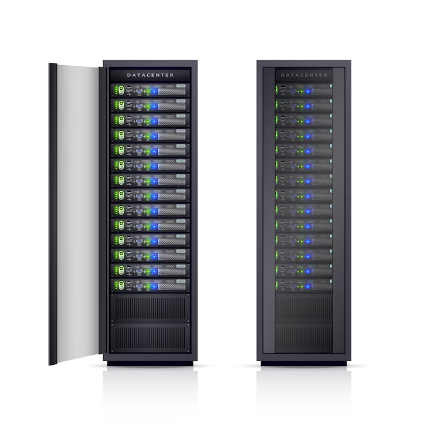

Finalidade e vantagens de um computador
O computador foi inventado para oferecer conforto e praticidade, como todo instrumento inventado pela humanidade. Ele é um equipamento com capacidade para receber, processar, produzir e armazenar grandes volumes de informações. As grandes vantagens que obtemos utilizando um computador são as seguintes:
- ▶ Rapidez na execução de tarefas, em função de sua grande capacidade de processamento de informações.
- ▶ Precisão na produção de informações (exatidão).
- ▶ Manipulação de grande volume de informações, principalmente quando do controle de tarefas repetitivas.
- ▶ Organização ou mesmo racionalidade, que é uma consequência de todas as vantagens citadas anteriormente.
Tipos de computadores
Servidor Corporativo
Servidor corporativo - é um computador que possui gigantesca capacidade de processamento e substituiu o antigo mainframe (este ocupava muito espaço). É adotado por grandes corporações que precisam controlar milhões de transações por dia (bancos e administradoras de cartões de crédito, por exemplo). Pode ser chamado também de super-servidor.
Fonte: Freepik
Desktop
Desktop - computador de mesa, não portátil, com monitor, mouse, teclado, caixas de som, e a caixa onde fica a CPU, placa-mãe, processador, entre outras peças. Uma versão de desktop conhecido como “all in one” (tudo em um) reúne basicamente o gabinete (CPU) e o monitor numa só estrutura, economizando espaço.
Fonte: Freepik
Notebooks ou laptops
Notebook ou laptop - é um microcomputador portátil. Antes, laptop e notebook tinham características diferentes, porém os conceitos se perderam com o passar do tempo. Monitor, teclado e CPU estão integrados em um só gabinete, com monitor retrátil para guarda e transporte.

Fonte: Pexels
Tablets e Smartphones
Tablet - computador em franco estágio de popularização. Sua característica principal é não possuir teclado. Praticamente todas as funções são efetuadas através da tela de toque (touchscreen). São menores do que um netbook e são mais voltados para leitura de publicações eletrônicas (jornais, livros), acesso à internet e entretenimento.

Fonte: Freepik
Smartphone - embora seja um telefone celular, possui funções encontradas em computadores, como acesso à internet e execução de programas aplicativos.
Fonte: Freepik
Conceitos básicos de Hardware e Software
O hardware é a parte física do computador, ou seja, todos os componentes que podem ser tocados, como monitor, teclado, mouse, placa-mãe, HD, entre outros.
Já o software é a parte lógica do computador, ou seja, os programas e sistemas que fazem o hardware funcionar. Exemplos de software incluem o sistema operacional (como o Windows ou Linux), navegadores de internet, editores de texto e jogos.
Em resumo, o hardware precisa do software para funcionar, e o software depende do hardware para ser executado.
Conhecendo as partes físicas
O computador é composto por diversas partes físicas(hardware). A seguir, destacamos os principais componentes externos:
- ▶ Monitor: é a “tela” do computador, usada para exibir as informações visuais.
- ▶ CPU (Unidade Central de Processamento): também chamada de “gabinete”, é onde estão os principais componentes internos, como o processador e a memória.
- ▶ Teclado: periférico usado para digitar textos e comandos.
- ▶ Mouse: dispositivo apontador que permite movimentar o cursor na tela e interagir com os elementos gráficos.
Introdução ao sistema operacional
Sistema operacional é o software principal de um computador. Ele atua como intermediário entre o usuário e o hardware, permitindo que programas e dispositivos funcionem de forma integrada. Exemplos de sistemas operacionais incluem o Windows, Linux, macOS (em computadores), e Android e iOS (em smartphones e tablets).
Com o sistema operacional, é possível abrir arquivos, instalar programas, usar a internet, conectar dispositivos como impressoras, e gerenciar tudo o que acontece no computador.